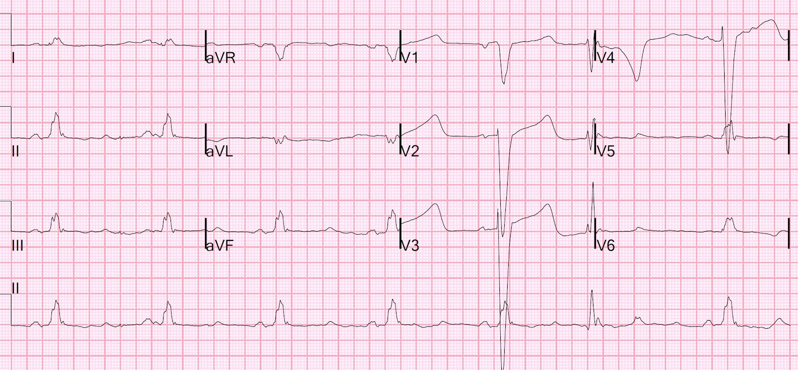
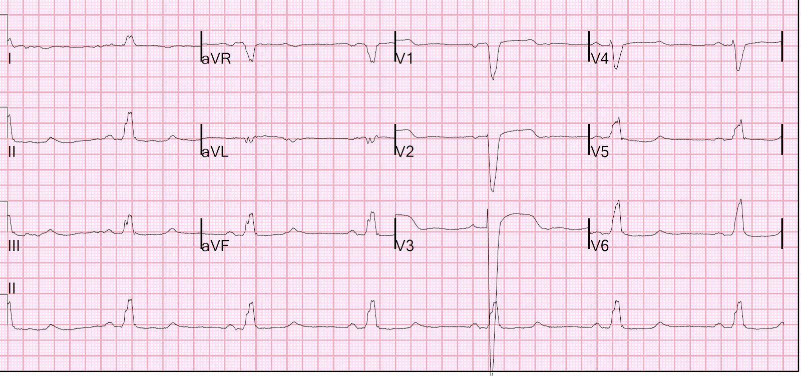
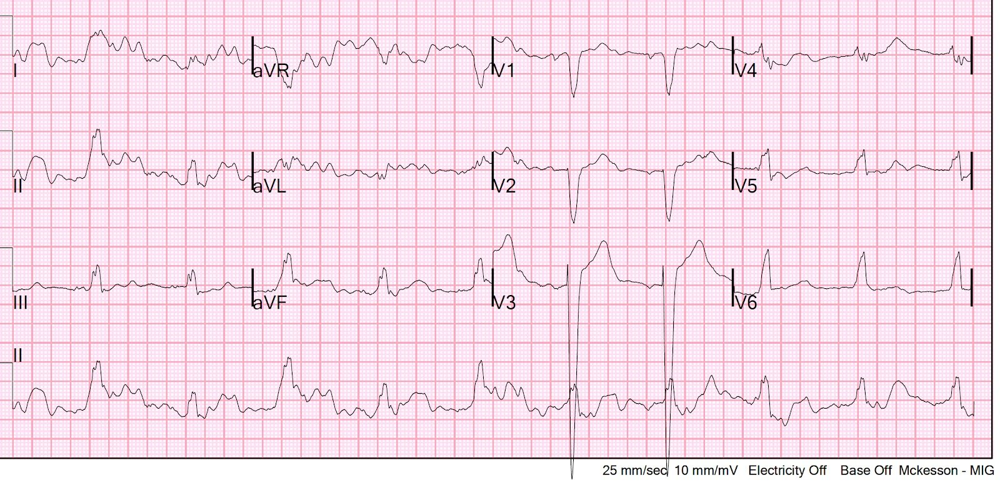
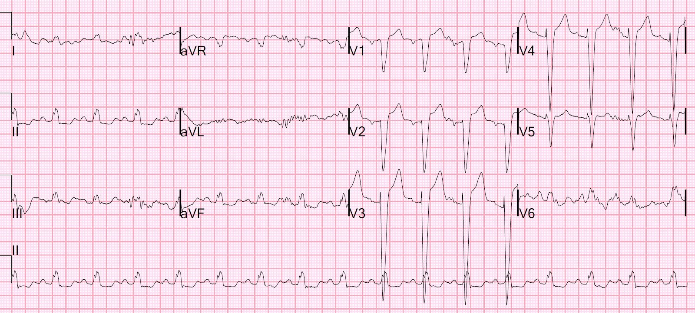

06/01/2022 — LBBB trông như thế nào trong hạ thân nhiệt nặng? QT có dài không? QT có phù hợp với nhiệt độ không?
Bản dịch tiếng Việt của bài "What does LBBB look like in severe hypothermia? Is there a long QT? Is the QT appropriate for the temperature?" – Dr. Smith’s ECG Blog. Giữ nguyên toàn bộ 4 hình ảnh của bản gốc.
Bệnh nhân này được phát hiện nằm gục giữa mùa đông Minneapolis. Ông rất lạnh, các ngón tay và ngón chân bị bỏng lạnh. Ông tỉnh nhưng có bệnh não, mê sảng, rất kích động và không thể làm dịu thỏa đáng bằng olanzapine và lorazepam, nên chúng tôi đã đặt nội khí quản. Nhiệt độ đáng tin cậy đầu tiên chỉ có thể đo được bằng nhiệt điện trở gắn ống thông Foley (Foley thermistor), và là 26.5 độ C (79.7 F).
Huyết áp của ông là 76/60. K là 2.8 mEq/L.
Đây là điện tâm đồ đầu tiên của ông:


Có nhịp chậm xoang kèm blốc nhánh trái (LBBB), với ST-T tương xứng, QT RẤT dài và một PVC. Tôi đo được QT là 800 ms.
Lưu ý rằng không có sóng Osborn, vốn luôn phải có ở nhiệt độ này. Có lẽ LBBB làm mất sóng Osborn?
Nói chung, có lẽ tốt nhất là KHÔNG hiệu chỉnh QT khi tần số tim dưới 60. (Xem bài báo này của Megan Rischall và tôi). Nếu hiệu chỉnh cho tần số tim 41, ta sẽ được 661 theo Bazett và 767 theo Hodges.
Khoảng QT trong LBBB bị biến dạng bởi thời gian QRS. Để bù trừ, có nhiều phương pháp hiệu chỉnh QT trong LBBB.
Một phương pháp là đo phần của QT bị biến dạng nhiều nhất bởi tái cực kéo dài, và tương đối độc lập với khử cực kéo dài: khoảng Tpeak-Tend (từ đỉnh T đến cuối T, TpTe). Trên điện tâm đồ này, tôi đo được Tpeak đến Tend ở V2/V3 là 150 ms, và như thế là rất dài. Theo Bazett, giá trị hiệu chỉnh là 124 ms.
Ken Dodd và tôi đã công bố rằng khoảng Tpeak đến Tend chưa hiệu chỉnh điển hình ở bệnh nhân LBBB không có OMI (và ở nhiệt độ bình thường) nằm trong KTC 95% là 85 – 92 ms. Chúng tôi đo các khoảng dài nhất ở các chuyển đạo II, V3 và V5. Khi hiệu chỉnh theo tần số tim bằng Bazett, Tpeak đến Tend trung bình là 100-109 ms (KTC 95%)
Có dữ liệu về khoảng Tpeak đến Tend khi dẫn truyền bình thường trong hạ thân nhiệt điều trị nhẹ: Tpeak đến Tend là 114 ± 29 ms, và khi hiệu chỉnh theo tần số tim bằng Bazett thì là 125 ± 36 ms.
Do đó, có thể nói rằng khoảng QT này, với Tpeak đến Tend là 124 ms, là bình thường đối với một bệnh nhân có LBBB và hạ thân nhiệt.
Bệnh nhân không cần ECMO như nhiều bệnh nhân hạ thân nhiệt vùng Northland của chúng tôi, vì ông không đáp ứng tiêu chuẩn trong phác đồ của chúng tôi: nhiệt độ của ông không dưới 24C, mà nằm trong khoảng 24 đến 28 với huyết động ổn định (huyết áp tâm thu 75 là rất tốt đối với người có nhiệt độ 24-28), và ông không bị đông cứng các chi (bàn tay/bàn chân/cánh tay, cẳng chân) — chỉ riêng ngón tay và ngón chân thì không tính.
Nhưng ông cần được làm ấm bên trong (internal rewarming) (làm ấm bên ngoài là chống chỉ định, vì có thể gây sốc tái làm ấm (rewarming shock), tụt nhiệt độ trung tâm (core afterdrop), hoặc cả hai — xem bên dưới), có thể thực hiện bằng ống thông làm ấm nội mạch, kèm hoặc không kèm làm ấm hỗ trợ qua dạ dày, bàng quang, ổ phúc mạc và/hoặc lồng ngực. Chúng tôi đã đặt một ống thông làm ấm nội mạch (Zoll, Alsius Coolgard) và bổ sung làm ấm qua bàng quang và dạ dày vì ông rất ổn định.
Ông cũng được phát hiện có viêm phổi và được điều trị bằng kháng sinh.
Ông được làm ấm dần, và có các điện tâm đồ tiếp theo sau đây
Điện tâm đồ thứ 2, lúc 5 giờ và 29.6 độ:


QT ngắn hơn
Điện tâm đồ thứ 3 lúc 8 giờ và 32.5 độ:


QT còn ngắn hơn nữa
Sáng hôm sau ông thực sự bị sốt, và có điện tâm đồ này:


LBBB bình thường
Những điểm cần học:
1. Hạ thân nhiệt dẫn đến nhịp chậm và hạ huyết áp tương ứng (phù hợp)
2. Hạ thân nhiệt nặng nên được làm ấm từ bên trong
3. QT kéo dài trong hạ thân nhiệt
4. Trong LBBB, khoảng QT bị kéo dài giả tạo do thời gian QRS
5. Để hiệu chỉnh cho QRS kéo dài, QT trong LBBB có thể được đo bằng khoảng Tpeak đến Tend, và khoảng này cũng thường được hiệu chỉnh theo tần số tim.
Bài tổng quan hay nhất về hạ thân nhiệt do tai nạn (Accidental Hypothermia)
–do các đồng nghiệp của tôi Megan Rischall và Andie Rowland-Fischer viết.
Toàn văn: Evidence-Based Management Of Accidental Hypothermia In The Emergency Department (Xử trí hạ thân nhiệt do tai nạn tại khoa cấp cứu dựa trên bằng chứng)
Trích đoạn:
Điện tâm đồ trong hạ thân nhiệt
Sóng J, còn gọi là sóng Osborn, là một bất thường điện tâm đồ nổi tiếng ở bệnh nhân hạ thân nhiệt. Sóng J biểu hiện là một sóng lệch dương ở cuối phức bộ QRS kèm điểm J chênh lên. (Xem Hình). Chúng thường xuất hiện khi nhiệt độ trung tâm dưới 32°C, và kích thước của chúng tỷ lệ nghịch với nhiệt độ trung tâm.27 Nhiều nghiên cứu quan sát, gồm tổng cộng 150 bệnh nhân hạ thân nhiệt do tai nạn, cho thấy sóng J có mặt ở tất cả bệnh nhân có thân nhiệt dưới 30°C.30 Sóng J được dự kiến sẽ nhỏ dần khi làm ấm, nhưng có thể tồn tại ngay cả sau khi đã đạt thân nhiệt bình thường. Mặc dù thường gắn liền nhất với hạ thân nhiệt, sóng J cũng đã được mô tả ở bệnh nhân xuất huyết dưới nhện, thiếu máu cục bộ cơ tim cấp, và ở bệnh nhân có thân nhiệt bình thường. Trong hạ thân nhiệt nhẹ, nhịp xoang chiếm ưu thế. Trong hạ thân nhiệt trung bình, rung nhĩ đáp ứng thất chậm trở thành nhịp thường gặp nhất, nhưng cũng có thể gặp nhịp chậm xoang, nhịp vào lại ở nhĩ và nhịp bộ nối. Tình trạng dễ kích thích của cơ tim có thể biểu hiện bằng các nhát ngoại vị thất. Khi hạ thân nhiệt trở nên nặng hơn, nguy cơ rung thất và vô tâm thu tăng lên. Trong hạ thân nhiệt trung bình và nặng, sự chậm lại của dẫn truyền, khử cực và tái cực cơ tim có thể dẫn đến PR kéo dài, blốc nhĩ thất, QRS giãn rộng và QTc kéo dài.
Các bài Smith ECG Blog về sóng Osborn
—Massive Osborn Waves of Severe Hypothermia (23.6 C), with Cardiac Echo (Sóng Osborn khổng lồ trong hạ thân nhiệt nặng (23.6 C), kèm siêu âm tim)
—A Pathognomonic ECG. What is it? (Một điện tâm đồ đặc hiệu chẩn đoán. Đó là gì?)
—Hypothermia and Right Bundle Branch Block, with ST Elevation? (Hạ thân nhiệt và blốc nhánh phải, kèm ST chênh lên?)
—Read this ECG (Hãy đọc điện tâm đồ này)
—Osborn Waves and Hypothermia (Sóng Osborn và hạ thân nhiệt) (đây là “Hình” ở trên)
Sốc tái làm ấm và tụt nhiệt độ trung tâm (Rewarming Shock and Core Afterdrop):
Cần thận trọng khi dùng biện pháp làm ấm chủ động bên ngoài. Co mạch ngoại biên khiến da dễ bị tổn thương do nhiệt hơn, và đã có báo cáo ca bệnh về bỏng toàn bộ chiều dày da do cả túi chườm hóa chất ấm lẫn hệ thống sưởi bằng khí nóng cưỡng bức.47 Ở bệnh nhân hạ thân nhiệt trung bình và nặng, bác sĩ cấp cứu cũng nên chú ý làm ấm thân mình trước khi làm ấm các chi. Làm ấm các chi sẽ đảo ngược tình trạng co mạch ngoại biên, và máu lạnh, toan hóa ứ đọng ở các chi sẽ quay về trung tâm, có thể làm nhiệt độ trung tâm và pH giảm thêm, gọi là tụt nhiệt độ trung tâm (core afterdrop). Ngoài ra, giãn mạch ngoại biên làm tăng khoang nội mạch, kéo máu ra khỏi tuần hoàn trung tâm, có thể dẫn đến mất ổn định huyết động và đôi khi gây rung thất. Hiện tượng này được bàn thêm trong phần “Những vấn đề còn tranh cãi”.
Những vấn đề còn tranh cãi
Tụt nhiệt độ trung tâm (Core Afterdrop)
Có nhiều tranh luận xung quanh hiện tượng tụt nhiệt độ trung tâm, tức là sự giảm nhiệt độ trung tâm thứ phát do tăng dòng máu tới các chi lạnh. Điều này khiến máu lạnh, toan hóa quay về tuần hoàn trung tâm, từ đó làm nhiệt độ trung tâm giảm thêm và tình trạng toan nặng lên. Giãn mạch ngoại biên cũng góp phần gây mất ổn định huyết động, và tất cả các yếu tố này khiến bệnh nhân tăng nguy cơ rối loạn nhịp gây tử vong trong quá trình làm ấm. Bệnh nhân hạ thân nhiệt trung bình đến nặng đặc biệt nhạy cảm với ngay cả một mức giảm nhiệt độ nhỏ, và điều này có thể dẫn đến trụy tuần hoàn.
Nguyên nhân, mức độ nặng và ý nghĩa lâm sàng của tụt nhiệt độ trung tâm vẫn còn được tranh luận. Một số người cho rằng tụt nhiệt độ trung tâm là do làm ấm chủ động bên ngoài, và cụ thể hơn là do làm ấm các chi đồng thời với trung tâm. Những người khác cho rằng tụt nhiệt độ trung tâm là không thể tránh khỏi bất kể phương pháp làm ấm nào, vì nhiệt độ sẽ giảm tạm thời ở bất kỳ vật thể nào có lõi ấm và ngoại vi lạnh, do tính chất dẫn nhiệt.73 Các nghiên cứu về tụt nhiệt độ trung tâm cho kết quả trái ngược nhau, và đây là lĩnh vực cần nghiên cứu thêm. Trong thời gian chờ đợi, chúng tôi khuyến cáo ban đầu hạn chế vận động hoặc làm ấm các chi để hạn chế khả năng xảy ra hiệu ứng tụt nhiệt độ trung tâm.
Thông tin bổ sung từ UpToDate về làm ấm bên ngoài trong hạ thân nhiệt do tai nạn mức độ nặng:
Làm ấm chủ động bên ngoài — Trong làm ấm chủ động bên ngoài, một số phối hợp giữa chăn ấm, đệm sưởi, nhiệt bức xạ, tắm nước ấm hoặc khí ấm cưỡng bức được áp trực tiếp lên da bệnh nhân. Các phương pháp này được chỉ định cho hạ thân nhiệt trung bình đến nặng (<32°C) và cho bệnh nhân hạ thân nhiệt nhẹ thiếu dự trữ sinh lý hoặc không đáp ứng với làm ấm thụ động bên ngoài. Làm ấm chủ động bên ngoài là chiến lược ban đầu hiệu quả cho phần lớn bệnh nhân hạ thân nhiệt nặng còn tưới máu tự nhiên.
Đặc biệt trong hạ thân nhiệt mạn tính kèm mất nước, nên làm ấm thân mình trước các chi. Những biện pháp này được thực hiện nhằm giảm thiểu tụt nhiệt độ trung tâm kèm hạ huyết áp và toan máu do giãn động mạch [22,24,80]. Với hệ thống làm ấm bằng khí cưỡng bức, ban đầu có thể để hở các chi. Điều này giảm thiểu tụt nhiệt độ trung tâm nhưng vẫn cho phép truyền nhiệt.
Tụt nhiệt độ trung tâm nguy hiểm là một nguy cơ đặc biệt của làm ấm chủ động bên ngoài. Biến chứng này xảy ra khi các chi và thân mình được làm ấm đồng thời. Máu lạnh, toan hóa ứ đọng ở các chi đang co mạch của bệnh nhân hạ thân nhiệt quay về tuần hoàn trung tâm, gây giảm nhiệt độ và pH. Đồng thời, việc đưa bệnh nhân ra khỏi môi trường lạnh dẫn đến giãn mạch ngoại biên, có thể góp phần gây tụt huyết áp đột ngột, tưới máu mạch vành không đủ và rung thất [10]. Những hiện tượng này có thể giải thích các rối loạn nhịp gây tử vong đôi khi xảy ra trong quá trình làm ấm [81,82]. Phối hợp các kỹ thuật làm ấm chủ động trung tâm với làm ấm chủ động bên ngoài có thể giảm thiểu sốc tái làm ấm và tụt nhiệt độ trung tâm ở bệnh nhân hạ thân nhiệt nặng [83] (xem ‘Làm ấm chủ động bên trong (trung tâm)’ bên dưới). Tuy nhiên, không có bằng chứng cho thấy làm ấm bên ngoài trước viện là nguy hiểm đối với bệnh nhân hạ thân nhiệt do tai nạn [84].